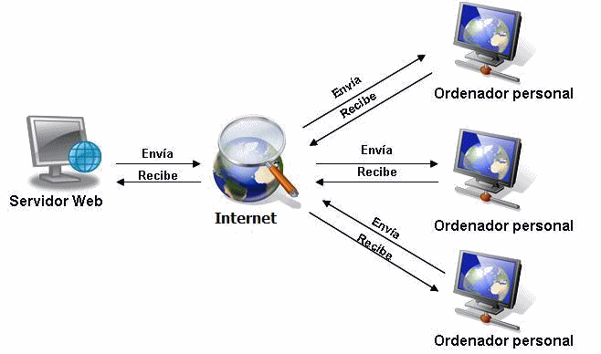

La comunicación es la forma en que el ser humano se puede comunicar y ala vez provocar una interacción entre los individuos hasta que se convierte en una sociedad. Es un proceso que consta de tres elementos básicos que son el emisor, el medio y el receptor, si deja de existir alguno de estos elementos deja de llamarse comunicación.
Ahora, los elementos que integran el proceso de telecomunicaciones es el mismo que el proceso de comunicación básico y son los siguientes:
Emisor.
Receptor.
Medio.
Protocolos.
A continuación se presenta una breve descripción de este proceso, en donde se puede ver de igual forma el proceso de las telecomunicaciones:


El aside
Así se vivió Expoestudiante 2019¡Así se vivió Expoestudiante 2019!?? Gracias a los más de 10 mil estudiantes que visitaron nuestro stand durante esos días. Recuerda que en la UNAD, tú eres el protagonista.#MásUNADMásPaís #ExpoEstudiantes2019 pic.twitter.com/Wk9EqTwCWU
— Universidad UNAD (@UniversidadUNAD) 29 de octubre de 2019